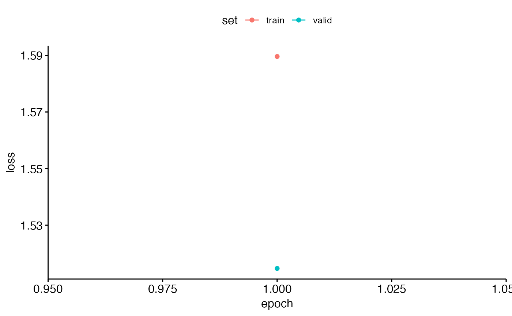

Train Multi-class pretrained CNN Models
train_CNN_multi.RdThis function facilitates training of convolutional neural network (CNN) models using various transfer learning architectures such as AlexNet, VGG16, VGG19, ResNet18, ResNet50, or ResNet152, on a given dataset. The trained model is saved along with metadata for further usage.
Arguments
- input.data.path
Character. Path to the input data folder.
- test.data
Character. Path to the test data folder.
- architecture
Character. Specifies the CNN architecture to use ('alexnet', 'vgg16', 'vgg19', 'resnet18', 'resnet50', or 'resnet152').
- unfreeze.param
Logical. Indicates whether all layers of the pretrained CNN should be unfrozen for retraining. Default is TRUE.
- batch_size
Numeric. Batch size for training the model. Default is 32.
- learning_rate
Numeric. Learning rate for training the model.
- save.model
Logical. Specifies whether to save the trained model for future use. Default is FALSE.
- class_weights
Numeric vector. Weights assigned to different classes for handling class imbalance. Default is c(0.49, 0.49, 0.02).
- epoch.iterations
List of integers. Number of epochs for training the model. Default is 1.
- early.stop
Character. Indicates whether early stopping should be applied or not. Use "yes" to apply and "no" to skip. Default is 'yes'.
- output.base.path
Character. Base path where the output files should be saved. Default is 'data/'.
- trainingfolder
Character. A descriptive name for the training data, used for naming output files.
- noise.category
Character. Label for the noise category. Default is "Noise".
Value
A list containing two elements:
Output_Path: Path where the trained model and metadata are saved.
Metadata: A dataframe containing metadata about the training session.
See also
nn_module and other torch functions.
Examples
{
{ input.data.path <- system.file("extdata", "multiclass/", package = "gibbonNetR")
test.data <- system.file("extdata", "multiclass/test/", package = "gibbonNetR")
result <- train_CNN_multi(
input.data.path = input.data.path,
test.data = test.data,
architecture = "alexnet", # Choose architecture
unfreeze.param = TRUE,
class_weights = rep( (1/5), 5),
batch_size = 6,
learning_rate = 0.001,
epoch.iterations = 1, # Or any other list of integer epochs
early.stop = "yes",
output.base.path = paste(tempdir(),'/',sep=''),
trainingfolder = "test",
noise.category = 'noise'
)
print(result)
}
}
#> Training alexnet
#> Detected classes: female.gibbon, hornbill.helmeted, hornbill.rhino, long.argus, noise
#> Warning: Some torch operators might not yet be implemented for the MPS device. A
#> temporary fix is to set the `PYTORCH_ENABLE_MPS_FALLBACK=1` to use the CPU as a
#> fall back for those operators:
#> ℹ Add `PYTORCH_ENABLE_MPS_FALLBACK=1` to your `.Renviron` file, for example use
#> `usethis::edit_r_environ()`.
#> ✖ Using `Sys.setenv()` doesn't work because the env var must be set before R
#> starts.
#> Epoch 1/1
#> Train metrics: Loss: 1.56 - Acc: 0.3542
#> Valid metrics: Loss: 1.5157 - Acc: 0.3333
#> `geom_line()`: Each group consists of only one observation.
#> ℹ Do you need to adjust the group aesthetic?
#> Warning: Some torch operators might not yet be implemented for the MPS device. A
#> temporary fix is to set the `PYTORCH_ENABLE_MPS_FALLBACK=1` to use the CPU as a
#> fall back for those operators:
#> ℹ Add `PYTORCH_ENABLE_MPS_FALLBACK=1` to your `.Renviron` file, for example use
#> `usethis::edit_r_environ()`.
#> ✖ Using `Sys.setenv()` doesn't work because the env var must be set before R
#> starts.
#> /var/folders/1s/x8xb37tj45j86tn_stc4v44w0000gn/T//RtmpNSz042/_test_multi_unfrozen_TRUE_/performance_tables_multi/

#> NULL